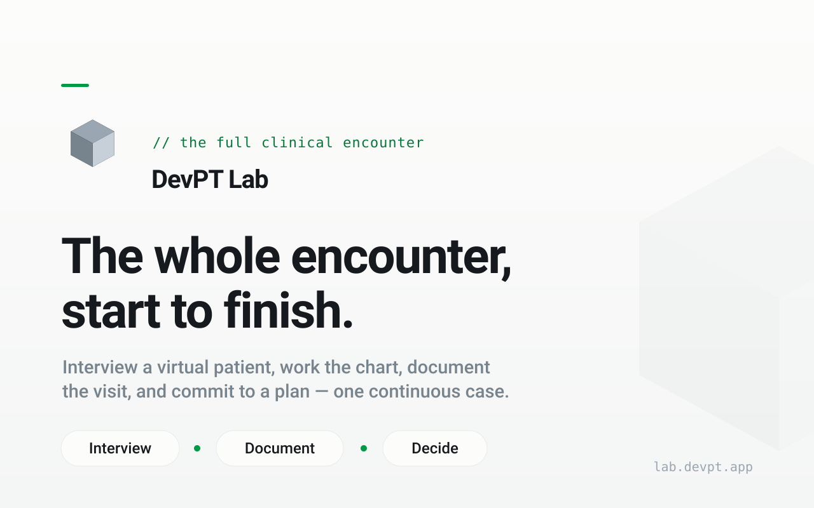

platform / live
DevPT Lab
The whole encounter in one continuous run: chart review, patient interview, screening, clinical reasoning, documentation, and debrief.
scenario packsrubric artifactspilot-ready
Open DevPT Lab →